DAT255: Deep learning engineering
Lecture 14
Natural language processing: Embeddings
From yesterday:
Text vectorisation: Converting text to numeric data.
Typical approach consists of several steps
- Standardisation:
Remove diacritics, punctuation, convert to lowercase - Tokenisation:
Split text into tokens which can be words, subwords, or groups of words - Indexing:
Convert tokens to integer values - Encoding:
Convert indices into embeddings or one-hot encoding
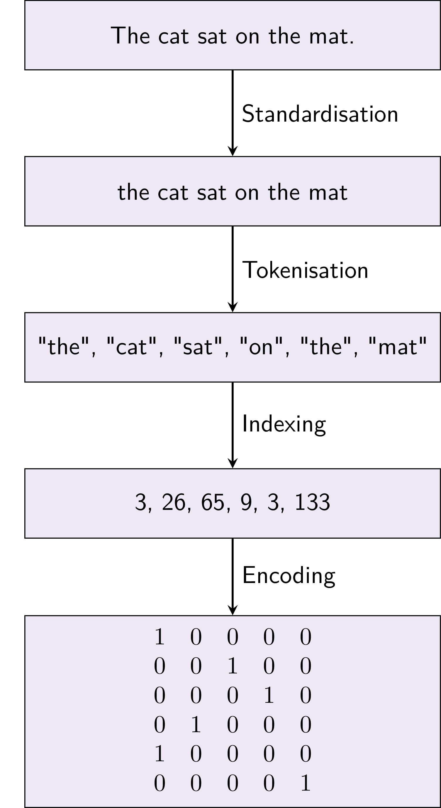
Today we want to make better encodings.
Embeddings
Recall we could map categorical values to vectors of floating-point values:
Our list of words are now vectors in an abstract space, where we choose the dimensionality ourselves.
At first, these values are randomly initialised
Then, we optimise them during training.
Embeddings
Embedding layers are practically the same as one-hot encoding, followed by a linear Dense layer (without the bias term):
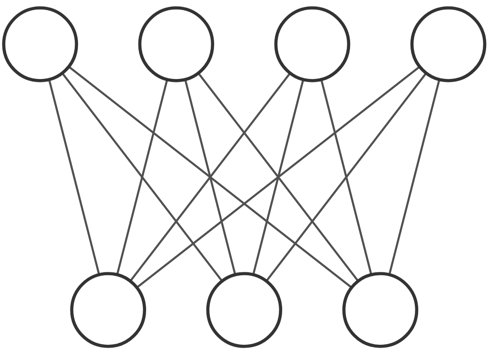
the
[ 0 1 0 0 ]
[ -1.46 -0.86 0.09 ]
Difference is that Embedding layers are implemented in a much more efficient way.
Demo
Let’s visualise some embeddings
Embeddings
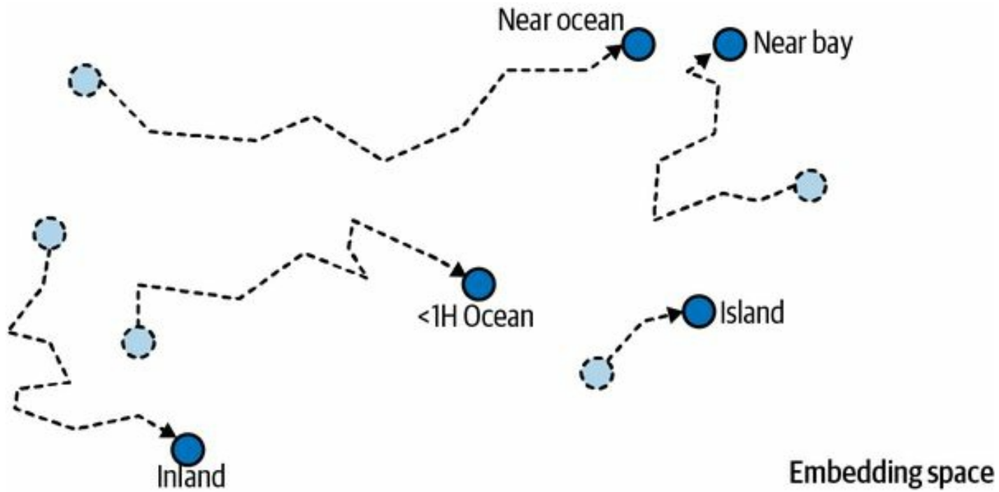
Computing similarity in embedding space
We’ve seen there is a relation between semantics and position in embedding space.
How can we measure token similarity?
Option 1: Euclidian (L2) norm
->distance between positions \(\mathbf{a}\) and \(\mathbf{b}\)
\[ \small || (\mathbf{a} - \mathbf{b}) ||_2 = \sqrt{(a_1 - b_1)^2 + ... \ (a_n - b_n)^2} \]
Option 2: Cosine similarity
->angular difference between positions \(\mathbf{a}\) and \(\mathbf{b}\) (ignores vector lengths)
\[ \small \cos(\mathbf{a}, \mathbf{b}) = \frac{\mathbf{a} \cdot \mathbf{b}}{||\mathbf{a}|| \cdot ||\mathbf{b}||} \]
Computing similarity in embedding space
How to interpret Euclidian vs cosine similarity?
Consider this example from StackOverflow:
You run an online shop and want to compare customers.
- User 1 bought 1x eggs, 1x flour and 1x sugar.
- User 2 bought 100x eggs, 100x flour and 100x sugar.
- User 3 bought 1x eggs, 1x Vodka and 1x Red Bull.
-> By cosine similarity, user 1 and user 2 are more similar
-> By Euclidian similarity, user 1 and user 3 are more similar
Word embeddings are affected by word frequency, so cosine similarity is often preferred.
Embeddings
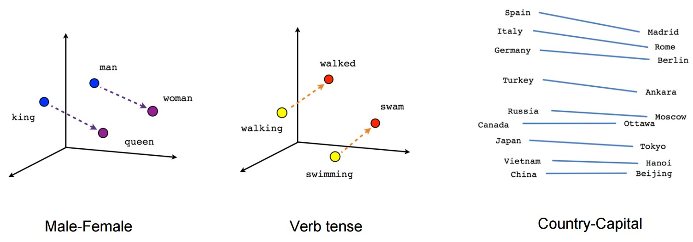
Better text tokenisation
Some words are obviously variants of the same; but conjugated, in plural, etc.
am, is, are are all variants of the lemma that is be
We can collapse these in order to simplify the vocabulary our model needs to learn:
He is reading books -> He be read book
Manually composed algorithms for this lemmatization have been developed over long time.
Better text tokenisation
Modern tokenisation algorithms are not inspired by linguistics, but rather substring frequencies in data.
Different LLMs use different algorithms, but they are mostly based on splitting words into individual characters and recombing them into common subwords.
The final vocabulary is under no obligation to make sense to us 🤷
Randomly selected tokens from the GPT-2 tokeniser vocabulary:
Different tokenisers example
Pretrained embeddings and models
For image classification tasks we could use take pretrained models and fine-tune, without having to retrain the first layers
- First layers were general enough to transfer well to basically all other tasks
Same for NLP models:
Embeddings are general and can be reused for other models or tasks.
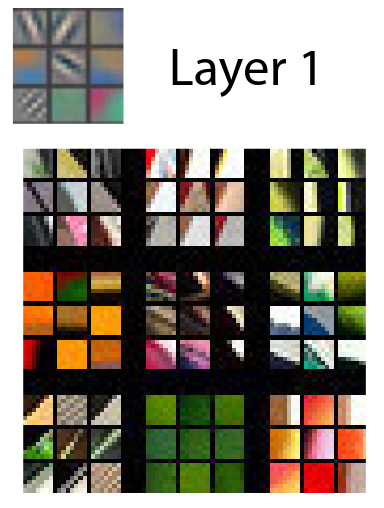
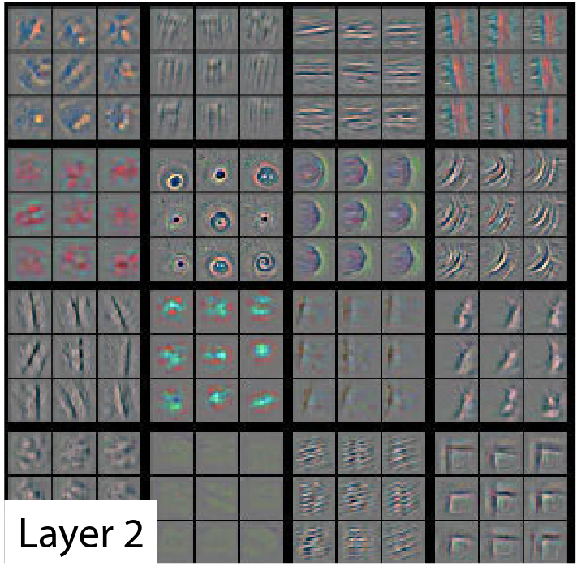
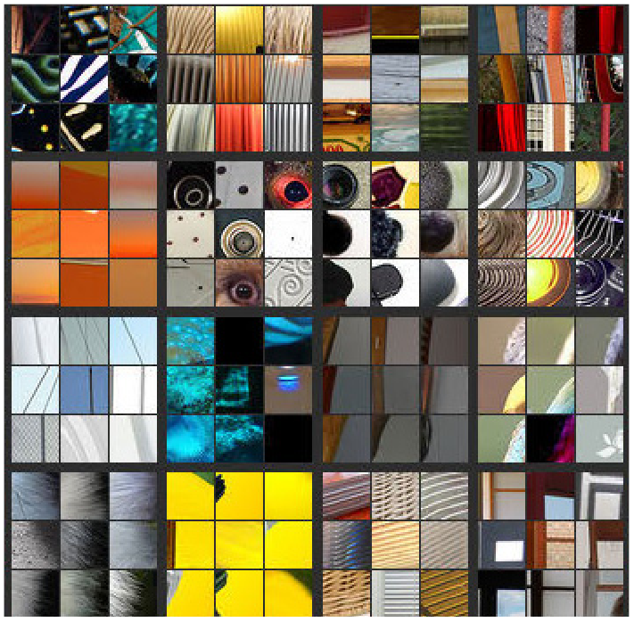
NLP resources
- Tensorflow Text
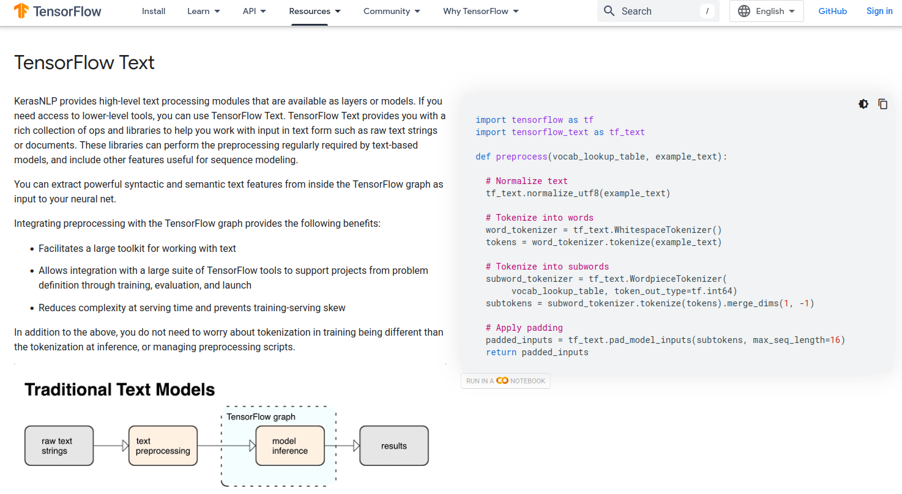
NLP resources
Tensorflow Text
Huggingface models and ML library
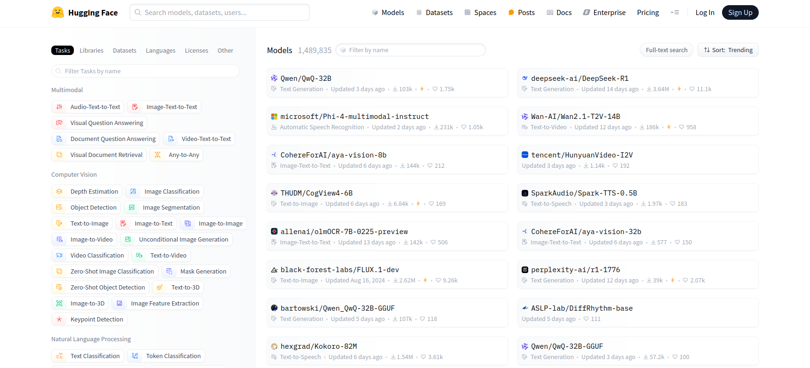
Other uses of embeddings
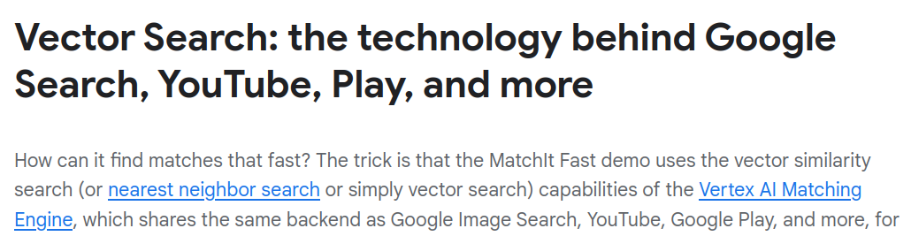


Embed everything
We have covered word embeddings, but we can create embeddings for other objects too
- Sentences
- Images
- Audio
- …
This is what allows us to train multi-modal machine learning models
Sentence embedding
Example: Universal sentence encoder

Measures similariy between on entire sentences
https://arxiv.org/abs/1803.11175
Image embedding


For images we can’t take the same direct approach:
Individual pixels don’t carry semantic meaning, only groups of pixels do.
But we already know well how to do feature extraction with CNNs
Let the (flattened) output of the last Conv layer be the embedding space
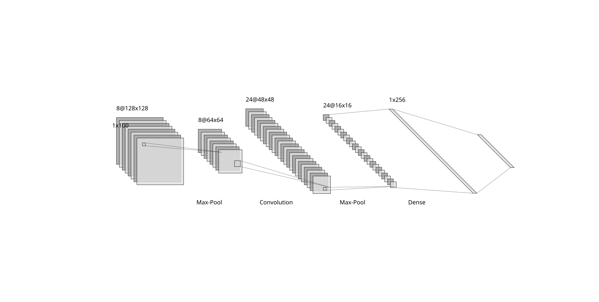
Audio embedding
Use CNNs here too:


Latent spaces
The output of embedding layers, convolutional layers, an all feature extraction layers, form a latent feature space
This latent space can contain knowledge applicable to a variety of tasks, allowing for transfer learning:
Training a model on one task, but using it (with little modification) on a different task.
This is nice because we can
- Pretrain on some task that is easy to set up and evaluate
- Fine-tune on a task that we actually want to solve, but is difficult to evaluate
(particularly common for language models )
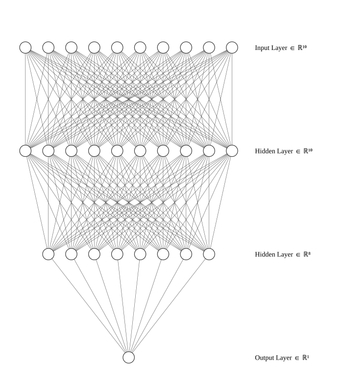
Pretrained embeddings
Embedding leaderboard
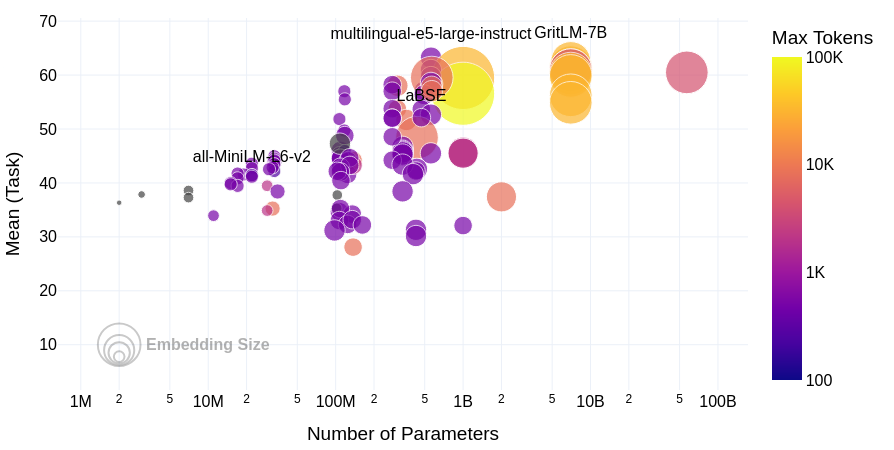
Measuring embedding quality
Evaluating semantic textual similarity is generally a difficult thing
For this, and other NLP model performance measurements, we rely on benchmark tasks:
Various classification / clustering / information retrieval problems with human annotated solutions.
sentences1 = [
"The new movie is awesome",
]
sentences2 = [
"The dog plays in the garden",
"The new movie is so great",
"A woman watches TV",
]
# Compute embeddings for both lists
embeddings1 = model.encode(sentences1)
embeddings2 = model.encode(sentences2)
# Compute cosine similarities
similarities = model.similarity(
embeddings1, embeddings2
)The new movie is awesome
- The dog plays in the garden : 0.0543
- The new movie is so great : 0.8939
- A woman watches TV : -0.0502Contextualised word embeddings
After training, embedding layers are static – a given token is always mapped to the same embedding vector.
However, a single token can have multiple meanings:
You are right about this
Make a right turn at the intersection
Our model can infer the correct meaning from context, as long as we treat the input as a sequence.
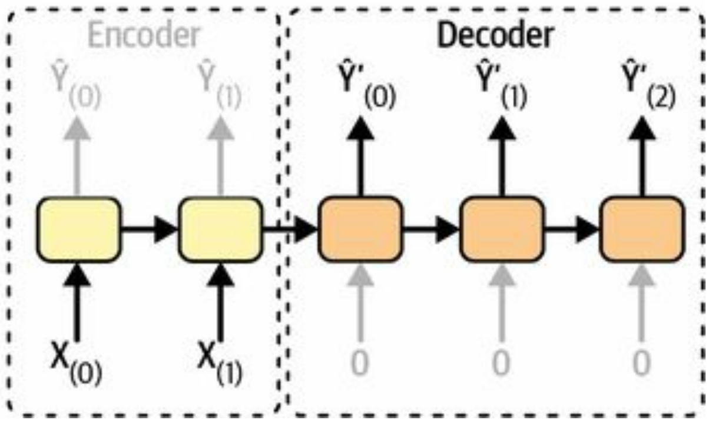
Additional resources
Pretrained models on KerasHub
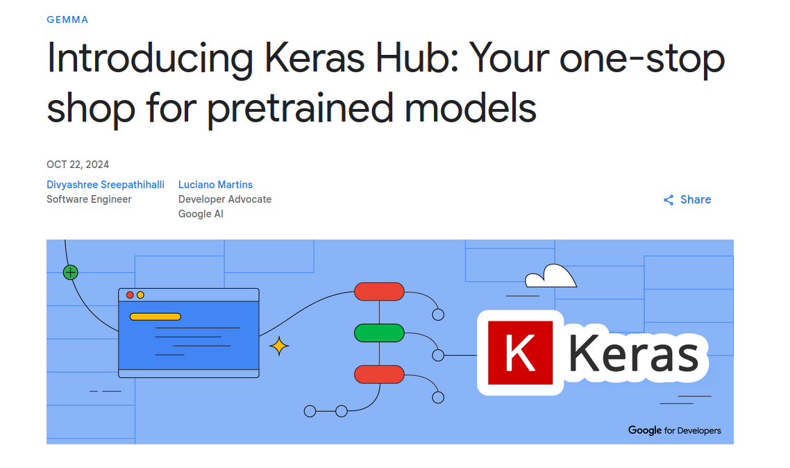